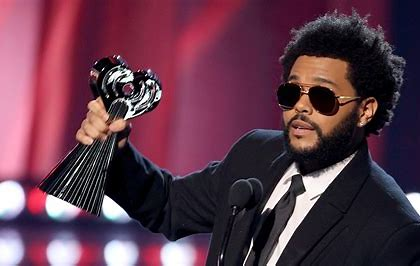
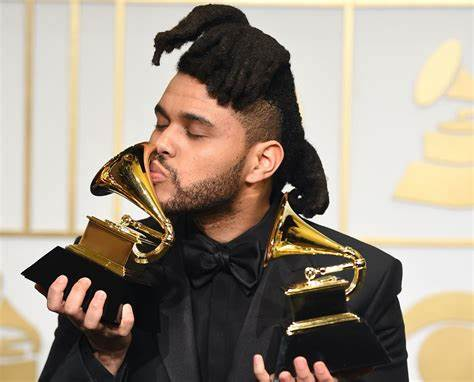

HIS BACKGROUND
The Weeknd, whose real name is Abel Makkonen Tesfaye, is a Canadian singer, songwriter, and record producer who has made a significant impact on the music industry since his debut in the early 2010s. Born on February 16, 1990, in Toronto, Ontario, The Weeknd emerged from relative obscurity to become one of the most influential and successful artists of his generation.
His music is known for its dark, moody, and atmospheric sound, often blending elements of R&B, pop, and electronic music. The Weeknd first gained recognition with his 2011 mixtapes, including "House of Balloons," which were critically acclaimed and quickly earned him a devoted fanbase. These early works showcased his distinctive voice, haunting lyrics, and unique production style.
The Weeknd's breakthrough came with his 2015 album "Beauty Behind the Madness," which included hit singles like "Can't Feel My Face" and "The Hills." This album not only topped charts worldwide but also earned him multiple Grammy Awards. He continued his success with subsequent albums, including "Starboy" (2016) and "After Hours" (2020), the latter featuring the record-breaking single "Blinding Lights," which became one of the most streamed songs of all time.

Achievements
-
The Weeknd, born Abel Makkonen Tesfaye, has solidified his position as one of the
most influential and successful artists of the 21st century. Throughout his career,
he has achieved remarkable feats, including winning four Grammy Awards, 19 Billboard
Music Awards, and six American Music Awards, among others. His discography boasts
chart-topping albums like "Beauty Behind the Madness," "Starboy," and "After Hours,"
with hit singles such as "Can't Feel My Face," "The Hills," and the record-breaking
"Blinding Lights." "Blinding Lights," in particular, became a cultural phenomenon,
setting a record for the most weeks spent in the top 10 of the Billboard Hot 100 and
becoming one of the most-streamed songs ever. In 2021, The Weeknd's performance at the
Super Bowl LV Halftime Show further showcased his status as a leading figure in the
music industry, receiving widespread acclaim for its innovative production. Beyond
his music, The Weeknd has made significant contributions to philanthropy, donating
millions to various causes, including COVID-19 relief and Ethiopian aid. His unique
sound, enigmatic persona, and lyrical depth have not only redefined contemporary R&B
and pop but have also left an indelible mark on popular culture, ensuring his legacy
as one of the most important and influential artists of his generation.
 Facebook
Facebook